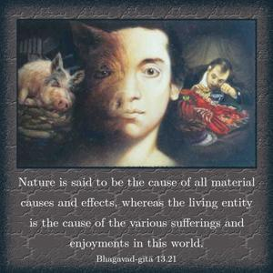
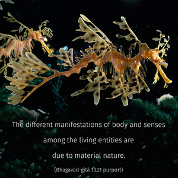
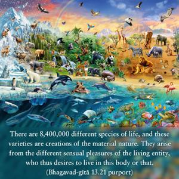
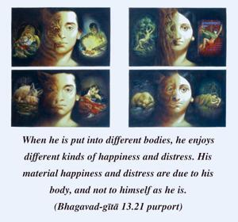
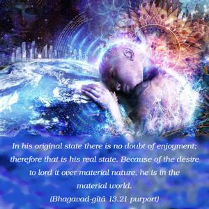
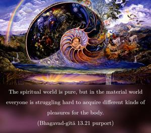

Nature is said to be the cause of all material causes and effects, whereas the living entity is the cause of the various sufferings and enjoyments in this world.






The different manifestations of body and senses among the living entities are due to material nature. There are 8,400,000 different species of life, and these varieties are creations of the material nature. They arise from the different sensual pleasures of the living entity, who thus desires to live in this body or that. When he is put into different bodies, he enjoys different kinds of happiness and distress. His material happiness and distress are due to his body, and not to himself as he is. In his original state there is no doubt of enjoyment; therefore that is his real state. Because of the desire to lord it over material nature, he is in the material world. In the spiritual world there is no such thing. The spiritual world is pure, but in the material world everyone is struggling hard to acquire different kinds of pleasures for the body. It might be more clear to state that this body is the effect of the senses. The senses are instruments for gratifying desire. Now, the sum total – body and instrument senses – is offered by material nature, and as will be clear in the next verse, the living entity is blessed or damned with circumstances according to his past desire and activity. According to one’s desires and activities, material nature places one in various residential quarters. The being himself is the cause of his attaining such residential quarters and his attendant enjoyment or suffering. Once placed in some particular kind of body, he comes under the control of nature because the body, being matter, acts according to the laws of nature. At that time, the living entity has no power to change that law. Suppose an entity is put into the body of a dog. As soon as he is put into the body of a dog, he must act like a dog. He cannot act otherwise. And if the living entity is put into the body of a hog, then he is forced to eat stool and act like a hog. Similarly, if the living entity is put into the body of a demigod, he must act according to his body. This is the law of nature. But in all circumstances, the Supersoul is with the individual soul. That is explained in the Vedas (Muṇḍaka Upaniṣad 3.1.1) as follows: dvā suparṇā sayujā sakhāyaḥ. The Supreme Lord is so kind upon the living entity that He always accompanies the individual soul and in all circumstances is present as the Supersoul, or Paramātmā.